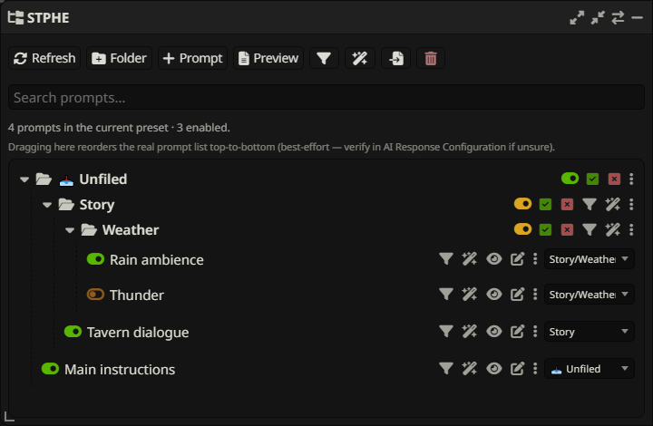
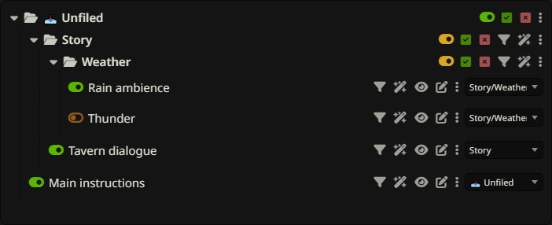

Overview & feature directory
Find every STPHE control and learn what it changes. These guides cover the v3.4.0 extension, from your first folder to tag-based automation and portable backups.
Choose your first workflow


STPHE (Silly-Tavern-Prompt-Hierarchy-Expanded) organizes SillyTavern’s Chat Completion Prompt Manager. Start with installation, then create a small folder and move two prompts into it. Existing Prompt Folders settings remain compatible; update your existing copy.
For a practical scenario, put “Rain ambience” and “Tavern dialogue” in a Scenes folder. Give Rain ambience a Weather tag, find it with Filter, then use Auto Filter to enable it when recent chat mentions rain.
All features at a glance

| What you want to do | Guide |
|---|---|
| Install, refresh, search names, resize or minimize | Getting started & panel |
| Nest, mute, force-toggle, reorder or multi-select | Folders & ordering |
| Create, rename, edit, tag, view or preview prompts | Prompts & tags |
| Match content, tags, XML, regex or recent chat | Manual Filter |
| Save, lock, group or transfer manual actions | Filter presets |
| React automatically to chat and control timing | Auto Filter |
| Back up, merge, replace, import native files or delete | Import, export & removal |
| Diagnose missing prompts, unexpected toggles or imports | Troubleshooting |
Every feature section includes a focused screenshot of the relevant application controls, with a caption explaining what to look for. Captures use sample prompts; colors and spacing may differ with your SillyTavern theme.
How the parts fit together


A prompt is a native SillyTavern definition. A folder organizes active prompts and can temporarily mute its contents. A tag is a reusable metadata label; one prompt can have several. A manual preset saves matching and targeting settings for buttons you run yourself. An Auto Filter rule evaluates a chat condition and applies an effect automatically.
Folders and tags do not insert their names into prompt text. A saved filter is not a saved snapshot of matching prompts: content and tag matches are recomputed when it runs. Full Prompt Preview shows enabled Prompt Manager content, not the entire final API request.
Search, examples & release notes
Use Search documentation to jump directly to a feature, for example “XML parameters”, “import tags”, or “before send”. On narrow screens, open the ☰ navigation first. The ◐ button switches light and dark themes. Click a screenshot to inspect the controls at full size.
See the detailed historical reference and release notes for earlier releases. The coverage inventory maps this documentation review to implementation files. This documentation expansion keeps extension version 3.4.0; it does not change runtime behavior.